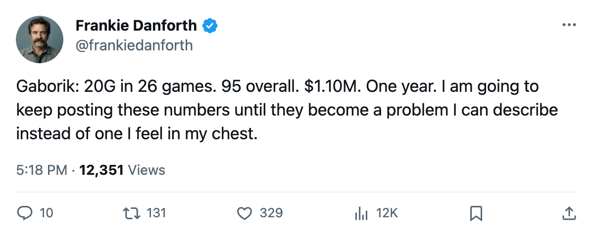
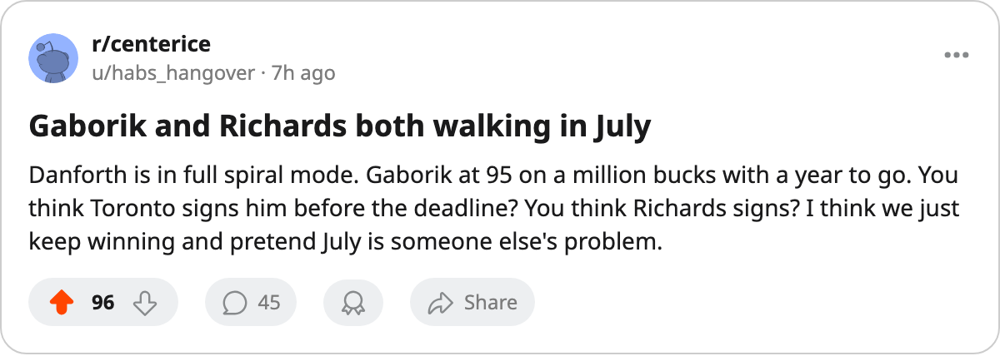

TOR
TORDANFORTH: Gaborik reads 95 on the Index and costs $1.10M, and I have been staring at both numbers since Saturday
The Bureau has him up 6 on the Development Index. He has 20 goals in 26 games. His contract expires in July. None of those three facts can survive the other two.
 Frankie DanforthColumnist · Queen City Telegram
Frankie DanforthColumnist · Queen City Telegram
I wrote about  Brad Richards84 and his $1.00M and I will write about him again in July and the day after that. But the player at the top of the Development Index right now is not Richards. It is
Brad Richards84 and his $1.00M and I will write about him again in July and the day after that. But the player at the top of the Development Index right now is not Richards. It is  Marian Gaborik95, up 6 on the Index from a base of 91 to 95 overall, and I cannot decide which is worse: that a 22-year-old is the best player on this roster, or that his name is on a one-year deal worth $1.10M.
Marian Gaborik95, up 6 on the Index from a base of 91 to 95 overall, and I cannot decide which is worse: that a 22-year-old is the best player on this roster, or that his name is on a one-year deal worth $1.10M.
The sheet says: 26 games, 20 goals, 14 assists, 34 points, 18.4 minutes a night, overall 95, potential 90. The potential is below the overall. The Bureau thinks he has already played past the ceiling it set for him. The Bureau may be right.
 Mats Sundin86 has 35 points in 26 games on $8.40M for 5 years. He is 33, his overall reads 86, and his Index form is not listed among the risers or the fallers, which means he sits at his base. Gaborik has 34 points on a player 8 points below him in overall and 11 years younger.
Mats Sundin86 has 35 points in 26 games on $8.40M for 5 years. He is 33, his overall reads 86, and his Index form is not listed among the risers or the fallers, which means he sits at his base. Gaborik has 34 points on a player 8 points below him in overall and 11 years younger.
Here is what frightens me about the Richards column I filed on Friday. I thought $1.00M for 28 points was the anomaly. Then I looked at the top of the Index and found a 20-goal season from a million-dollar winger. If Richards is a ticking bomb, Gaborik is the whole building.
 Alexander Mogilny85 has 39 points on $5.50M and is 35. He is the oldest player in the lineup. Gaborik and Mogilny are on the same power play unit, P2LW and P1RW, and between them they cost $6.60M combined. Half of that walks in July.
Alexander Mogilny85 has 39 points on $5.50M and is 35. He is the oldest player in the lineup. Gaborik and Mogilny are on the same power play unit, P2LW and P1RW, and between them they cost $6.60M combined. Half of that walks in July.
The fourth-line tax does not help here
 Jason Spezza71 is the 4C__ on this club with 11 points in 23 games at $1.00M.
Jason Spezza71 is the 4C__ on this club with 11 points in 23 games at $1.00M.  Nikita Alexeev75 is the 4RW with 16 points in 26 games at $1.10M. I have spent the whole season complaining about what the bottom six gives us. The top of this roster has a 95-overall player and a 91-overall player and a potential-90 winger all on one-year deals. The fourth line is a tax. The first line is a hostage situation.
Nikita Alexeev75 is the 4RW with 16 points in 26 games at $1.10M. I have spent the whole season complaining about what the bottom six gives us. The top of this roster has a 95-overall player and a 91-overall player and a potential-90 winger all on one-year deals. The fourth line is a tax. The first line is a hostage situation.
 Maxim Afinogenov83 at $4.50M for 4 years, 15 points in 14 games, 83 overall, is the only winger on this club with years left and real money. Everyone else at the top is free.
Maxim Afinogenov83 at $4.50M for 4 years, 15 points in 14 games, 83 overall, is the only winger on this club with years left and real money. Everyone else at the top is free.
I keep running the same numbers. 34 points, $1.10M, 22 years old, 95 overall, 1 year. Every time I put them down and look up they look worse.

